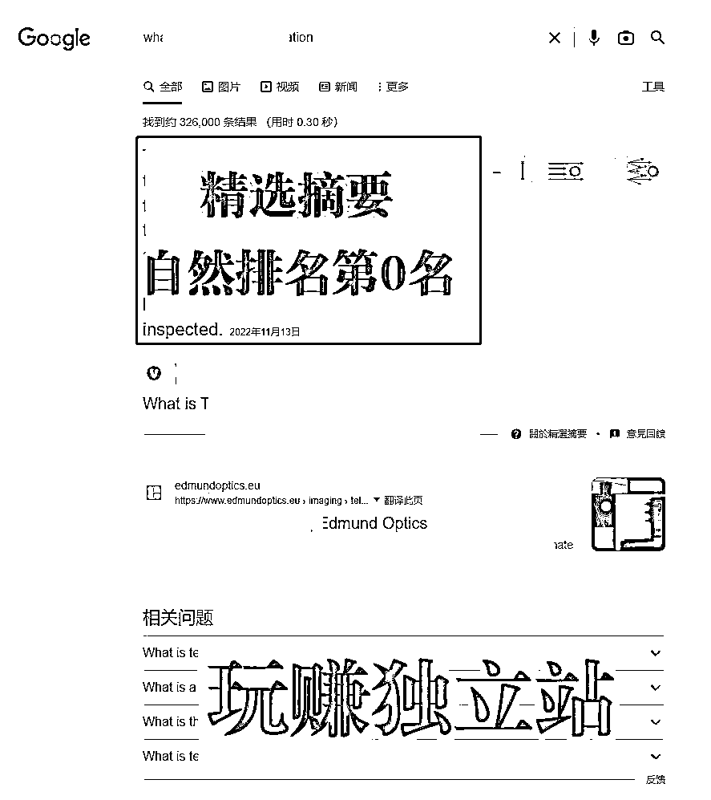
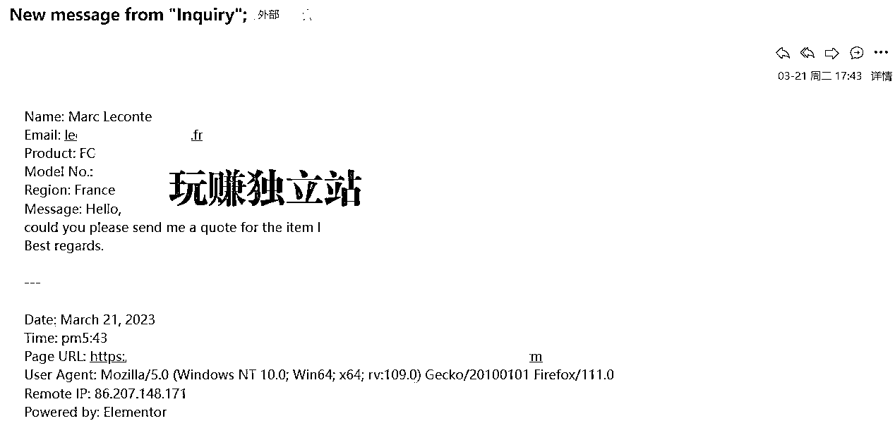
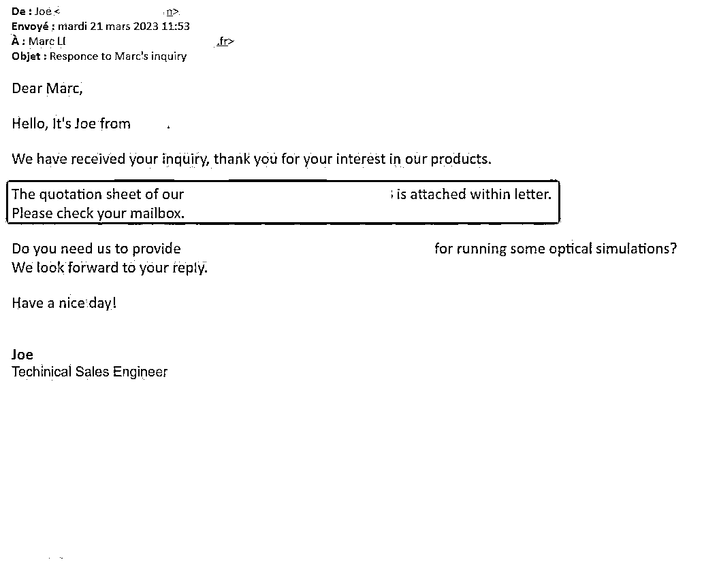
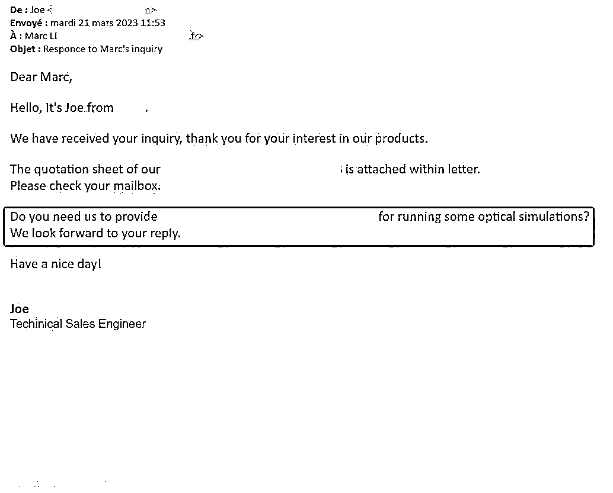
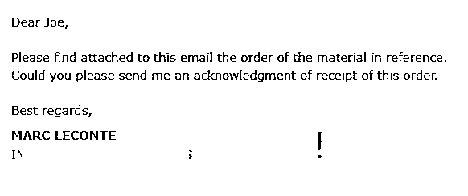
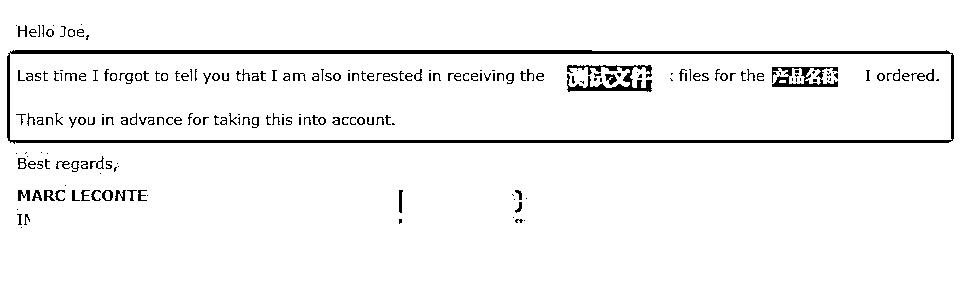
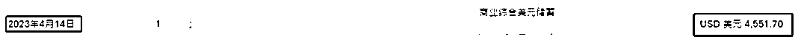

来源：https://w09ipxgwb2.feishu.cn/docx/VILid7sleoZ6puxkchxcRM9vn6g
大家好，我是马钱钱。
一名在外贸行业野蛮生长了8年+的外贸人，目前主业是【海外独立站营销推广操盘手】，擅长谷歌SEO内容营销、独立站运营团队搭建和外贸业务团队搭建。
简单地说，我的主要工作，是通过海外独立站，以 [谷歌SEO内容营销] 为主要推广方式，帮助外贸人和外贸企业，在谷歌搜索引擎上进行推广引流，实现躺拿被动询盘，获取精准的海外客户。
因此，我工作内容主要解决的是外贸获客问题，帮助大家摆脱对平台的过度依附，突破传统获客方式的困境。通过组建属于自己的流量运营团队，打造自有B2B出海品牌，享受自然流量带来持续的精准询盘，从根本解决获客困难的问题。
前几天，我在朋友圈分享了一个独立站订单成交的案例。今天准备把这个成交的过程拎出来，带大家感受一下独立站过来的客户，究竟是怎么样成交的。
25天通过海外独立站成功转化一个B端客户的订单的过程，我又做对了哪些事情？
成交客户首要的第一步，是获取客户线索。我目前唯一获客渠道就是独立站精准引流。在谷歌搜索引擎上，通过SEO内容营销，输出专业的博客文章，竞争谷歌首页的排名，争取更多的曝光和点击，从而获取精准询盘和客户。
我每天是怎么安排我的推广工作的呢？了解我的朋友都知道，我做独立站推广，不做外链，也没怎么做站内优化。
第一个原因是，除了内容营销，其他的真的不重要。谷歌已经足够智能去抓取它想要、有价值的，你花再多的心思去浪费在没太大意义的事情上，真的就是不珍惜自己的生命。
其次就是，仅仅做博客文章，高质量内容的输出这件事，就能让你无比充实了，哪还有时间拿来浪费去做不重要的事情呢。
那么，我们着手做推广前，肯定是要去调研同行，调研自己的产品和市场，把整个行业在谷歌上的推广情况摸清楚，那么你才能做到知己知彼，百战不殆。
别人做的不好，就是你的机会，赶紧冲，抢占谷歌的首页排名就更容易。别人做的好，那我就把它拎出来，拆解看看，我如何能做得更好，把它超越。但凡我有这样的决心，把自己排上去，只是时间的问题。

「我用2个月拿到谷歌精选摘要，排名谷歌首页第0名」
所以，如果你掌握了方法和技能，执行力跟上，只需要做好内容输出，就可以等着拿结果了。网站流量起来了，有询盘了，有客户了，我们就可以开始下一步的转化了。

当你开始收到客户发过来的询盘，说明你就要面对下一步的转化了。比如我在3月21日收到一个法国客户的询盘。收到询盘的第一步，你需要判断他的需求是否真实。
我们可以从邮箱、域名网址、留言内容、提交询盘的页面和访问IP地址综合判断。真实的询盘，就需要迅速地给出回复。一般来说，邮箱是带有网址的公司邮箱，说明他是一个正规的企业客户。相比于用gmail等私人邮箱，正式的企业邮箱更能说明这个客户的潜在价值，那么你需要更重视。
同时，根据这个企业域名，你可以去访问他的网址，关于这个客户的背景调研，大部分信息就可以从他的网站上获取了。

需要提醒的一点是，我们给网站设计询盘的表单，一般为了更好的用户体验，又能收集到重要的客户信息。因此，我只会设置email和message为必填选项。
试想，如果你对某一样东西有欲望，想要去购买的时候，突然出现太多的信息需要你去填写，这反而会把大部分客户拦在门外了。所以，表单尽可能简单、又能收集到重要信息。
回到正题，我们在简单分析询盘并对这个客户的背景有一定了解后，第一件事是迅速回复，第一时间争取到与客户建立联系的机会。
一是，迅速的反馈，会让客户感受到你对他的重视，人一旦感觉自己被重视，就会对你增加信任，谁不喜欢重视自己的人呢？虽然此时的信任，只是从服务的角度来看，但做好了，对于销售转化来说，是加分的。
二是，你的迅速回复，可能就决定你是否能成交的机会。客户购买东西，一定不是只有你一家。现在的市场，大部分都是供大于求。如果客户跟10家公司发询盘，其中只有3家迅速反馈，你觉得他还会选择剩下的7家吗？因此，从这个服务的态度上，做得好的销售，已经遥遥领先，拿到机会了。
及时反馈固然重要，但如果你的邮件回复得平平无奇，对客户的需求理解的不准确，给到的答案牛头不对马嘴，如此珍贵的机会，因为你的不专业，也一定会错失这个订单的。
因此，我们在回复客户信息前，你一定要做好两件事：一是仔细阅读并理解客户的信息和问题；二是认真分析客户的需求并给出专业的解决方案和建议。这样，你给客户的回复，才会让客户觉得：哎？你懂我，你很专业，你是我想要找的人，那我们来进一步谈谈吧。
很多销售常犯的错误是，一收到客户的询盘，激动不已。还没看完信息，都没理解客户的问题，马上就回过去：你好，我是谁，我来自哪个公司，我们公司卖什么产品，我们员工多少人，我们产线规模多大，我们月产量多少，我们年销售额多少，我们有多丰富的产品线..........
What???我是客户，我也会一脸懵逼，你是谁跟我有什么关系？我要的需求，你一句没回答，一直在描述你有牛B，多有实力？
所以，请保持头脑清醒：针对问题，回答问题，提出方案，给到价值。
可以看到，前面的客户询盘里，他的需求很简单，就是需要某款具体产品的报价。那么，我们在回复客户的问题时，最主要的就是报价问题，尽可能精简又明确地给到客户想要的。
那么，一份专业的报价单，加上对应的详细参数信息，就可以回复过去了。
这是我给到的具体回复，很简单，不废话，也不自嗨。

如果你觉得报价单发过去就够了，那很大概率你会发现，多半就没了然后。如果你做外贸足够久，你可以回想自己有发过多少份报价单出去，从此便只剩下清净，客户再也不回复你了。怎么办？
从客户的需求里，往深度挖掘。顺着他的需求，你再多想一点，多为他考虑一点。从为他着想的角度，去提供价值，展示你的专业度。

比如在上面回复客户的邮件里，你会注意到发完报价，我并没有就说拜拜。还没有结束呢，为什么？一定要记得留钩子啊！留钩子，才是客户会回复你的前提。
像我们这种产品，属于配件，客户买去是用在一个系统里的。那么他需要一些文件参数，去先计算和测试是否能完美地匹配他目前的需求。所以，除了给他想要的报价之外，我们会从他的角度为他考虑，万一他买回去不合适，是不是就浪费钱。所以我们主动提出建议，让他去进行模拟测试，那么，他就需要具体的测试文件，想要的话，是不是就要回复我们呢？
看似客户不在乎价格，但是我们需要想客户之所想，用钩子来让他回复。
虽然这个客户直接在3.24号发过来PO，让我们给他做PI，他要付款，但是你可以看一下他接下来的第二封补充邮件。


他说，上次我忘了回复你，我确实是想对我要买的产品进行模拟测试一下，感谢你提前帮我把这个问题考虑进去了。最后的结果就是，我们在4月14日，收到客户的付款，$4551.70美金。

虽然客户只买了2pcs, 我们也有100%的利润，哈哈哈，笑死。相比于客户到一个B2B平台上买东西，他能货比几十家，我们通过独立站成交，他就是没得比。
把客户引入我们销售框架里，把他成交，不就是咱们做独立站的快乐之处，你能Get吗？
以上就是一个B2B订单的整个成交闭环。你学会了吗？